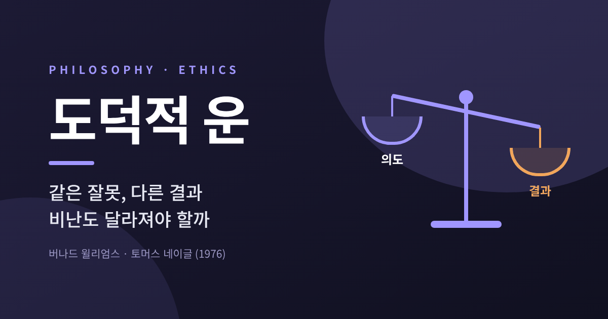
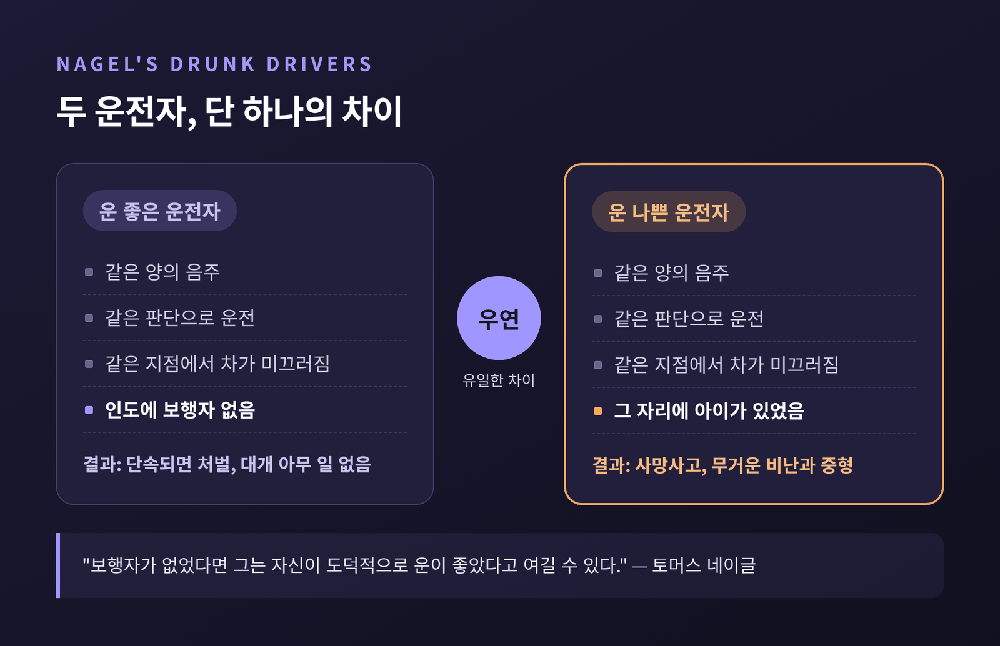
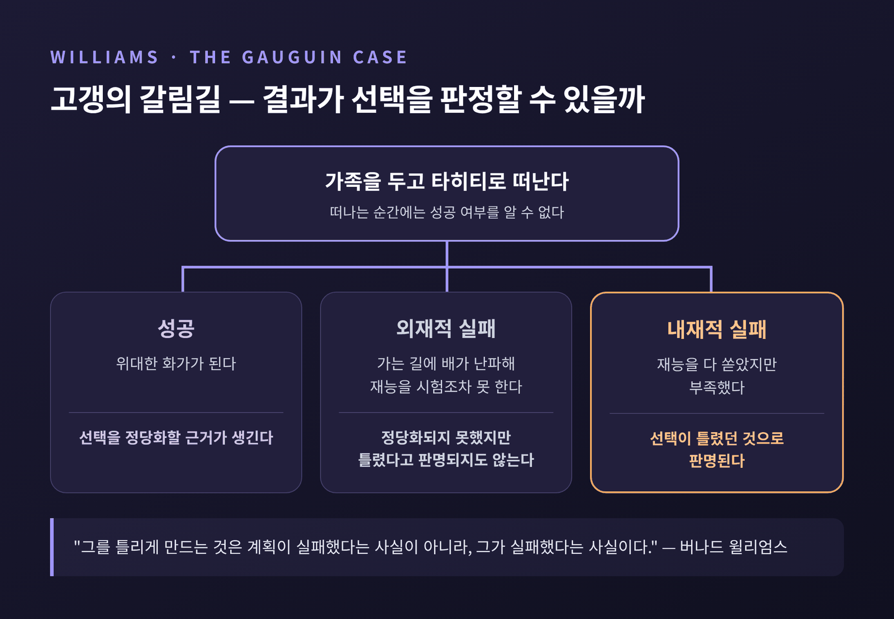
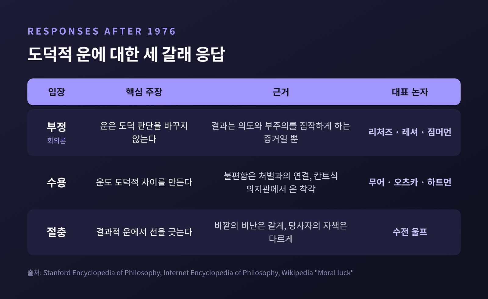
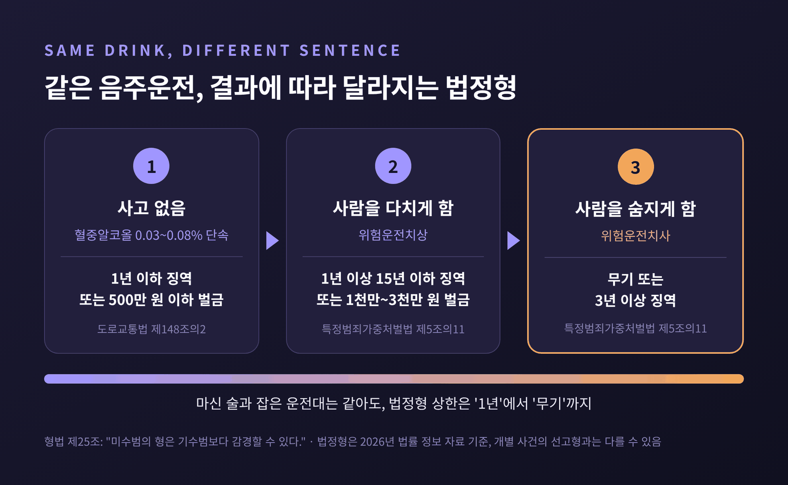

도덕적 운이란 — 같은 잘못에 결과만 다르면 비난도 달라져야 할까

오늘은 철학에서 '도덕적 운(moral luck)'이라 부르는 문제를 이야기해 보려 합니다. 똑같이 술을 마시고 운전했는데 한 사람은 아이를 치고, 다른 사람은 무사히 집에 도착했습니다. 두 사람을 다르게 비난해도 될까요? 짧게 답을 먼저 말씀드리면, 철학자들 사이에서도 아직 합의가 없습니다. 다만 그 이유를 따라가 보면 우리가 남을 판단하는 방식의 맨 밑바닥이 드러납니다.
■ 두 운전자 이야기 — 문제는 어디서 시작되는가
미국 철학자 토머스 네이글은 이렇게 썼습니다. "술을 너무 마신 사람의 차가 인도로 돌진했을 때, 그 길에 보행자가 없었다면 그는 자신이 도덕적으로 운이 좋았다고 여길 수 있다."
두 운전자를 나란히 세워 보겠습니다. 둘 다 같은 양을 마셨고, 같은 판단으로 운전대를 잡았고, 같은 지점에서 차가 미끄러졌습니다. 차이는 단 하나입니다. 한 사람의 귀갓길 그 지점에 마침 아이가 놀고 있었다는 것.

우리는 뒤의 운전자를 훨씬 무겁게 비난합니다. 법도 그렇게 합니다. 그런데 아이가 그 자리에 있었는지는 운전자가 조절할 수 있는 일이 아니었습니다. 의도도, 부주의의 크기도 같은데 비난만 달라진다면, 우리는 '운'을 두고 사람을 평가하고 있는 셈입니다.
네이글은 이것을 이렇게 정의했습니다. 어떤 사람이 한 일의 중요한 부분이 그의 통제 밖 요인에 달려 있는데도, 우리가 그 부분을 근거로 계속 그를 도덕적으로 판단한다면 — 그것이 도덕적 운입니다.
■ 통제 원칙, 그리고 칸트의 보석
이 사례가 불편한 이유는 우리 안에 강한 믿음 하나가 있기 때문입니다. 스탠퍼드 철학 백과는 이를 '통제 원칙'이라고 정리합니다.
- 우리는 평가받는 대상이 우리가 통제할 수 있는 요인에 달려 있는 한에서만 도덕적으로 평가받는다.
- 두 사람의 차이가 통제 밖 요인뿐이라면, 두 사람을 다르게 평가해서는 안 된다.
네이글도 반성하기 전에는 "자기 잘못이 아닌 일로 평가받을 수 없다"는 생각이 직관적으로 그럴듯하다고 인정했습니다.
이 믿음의 철학적 뿌리로 흔히 칸트가 꼽힙니다. 칸트에게 선의지는 결과 때문이 아니라 그 자체로 선합니다. 불운 탓에 아무것도 이루지 못하더라도 선의지는 "보석처럼 그 자체로 빛날 것"이라고 했습니다. 이 관점에서 보면 두 운전자의 도덕적 무게는 같아야 합니다. 마음의 상태가 같았으니까요.
문제는 우리의 실제 판단이 이 원칙을 따르지 않는다는 점입니다. 원칙은 '같다'고 말하는데, 직관과 법은 '다르다'고 말합니다. 도덕적 운은 바로 이 틈에서 생기는 역설입니다.
■ 1976년, 같은 제목의 두 논문
'도덕적 운'이라는 말은 영국 철학자 버나드 윌리엄스가 만들었습니다. 1976년 아리스토텔레스 학회 심포지엄에서 윌리엄스와 네이글이 똑같이 「Moral Luck」이라는 제목으로 발표했고, 두 글이 같은 학회지 별책에 나란히 실렸습니다. 네이글의 글은 손질을 거쳐 1979년 논문집 『Mortal Questions』에 다시 실렸습니다. 그래서 자료에 따라 1976년과 1979년이 함께 보입니다.
두 사람은 같은 문제를 다른 방향에서 들어 올렸습니다. 윌리엄스가 '성공이 선택을 정당화할 수 있는가'를 물었다면, 네이글은 '운이 판단에 끼어드는 경로'를 하나하나 분류했습니다.
■ 네이글의 네 가지 운
네이글은 도덕 평가가 운에 흔들리는 방식을 네 갈래로 나눴습니다.
1. 결과적 운 — 행동과 계획이 어떻게 풀리는가의 운입니다. 음주운전 사례가 대표적입니다. 네이글은 다른 예도 듭니다. 브레이크 점검을 게을리한 트럭 운전사가 있습니다. 아이가 뛰어들지 않으면 그는 자기 부주의를 조금 탓하고 맙니다. 아이가 뛰어들어 사고가 나면 평생 자신을 책망합니다. 그러나 네이글의 말대로 "부주의는 두 경우 모두 같고, 아이가 뛰어드는지는 운전자가 통제할 수 없습니다."
2. 상황적 운 — 어떤 상황에 놓이는가의 운입니다. 네이글의 예는 서늘합니다. 강제수용소 장교였던 사람은 나치가 집권하지 않았다면 조용하고 무해한 삶을 살았을지 모릅니다. 반대로 아르헨티나에서 평온하게 산 사람은, 1930년 무렵 사업 때문에 독일을 떠나지 않았다면 수용소 장교가 되었을지도 모릅니다. 같은 성품이라도 시험대에 오르지 않은 사람은 비난받지 않습니다.
3. 구성적 운 — 어떤 사람인가의 운입니다. 비겁함, 독선, 이기심 같은 성향은 양육과 유전처럼 스스로 고르지 않은 요인에서 상당 부분 만들어집니다. 그런데도 우리는 이기적인 사람을 이기적이라고 탓합니다.
4. 인과적 운 — 앞선 원인들에 의해 어떻게 결정되는가의 운입니다. 이것은 자유의지와 결정론의 오래된 문제와 겹칩니다. 그래서 철학자 데이나 넬킨은 이 범주가 앞의 세 가지와 사실상 중복된다고 비판하기도 했습니다.
네 갈래를 모두 통과하고 나면 무엇이 남을까요. 네이글의 결론은 비관적입니다. 통제 원칙을 끝까지 적용하면 "진정한 행위자성, 따라서 정당한 도덕 판단의 영역은 크기 없는 점으로 줄어드는 듯하다"고 썼습니다. 내가 한 일 중 순수하게 내 것인 부분을 찾을수록, 그 부분은 점점 작아진다는 뜻입니다.
■ 윌리엄스의 고갱 — 성공이 선택을 정당화할 수 있을까
윌리엄스는 조금 다른 이야기로 시작합니다. 실제 화가를 다소 허구화한 인물 '고갱'이 가족을 두고 남태평양 타히티로 떠납니다. 그림에 모든 것을 걸기 위해서입니다. 떠나는 순간 그는 자신이 위대한 화가가 될지 알지 못합니다.

윌리엄스의 분석은 이렇습니다. 그 선택을 정당화할 수 있는 것은 성공 그 자체뿐입니다. 그런데 실패에도 두 종류가 있습니다. 타히티로 가는 길에 배가 난파해 재능을 시험할 기회조차 잃었다면, 그는 정당화되지 못했지만 '틀렸다'고 판명된 것도 아닙니다. 반면 재능을 다 쏟았는데 부족했다면 이야기가 다릅니다. 윌리엄스의 표현으로는 그를 틀리게 만드는 것은 "계획이 실패했다는 사실이 아니라, 그가 실패했다는 사실"입니다.
여기서 불편한 질문이 나옵니다. 가족을 떠난 결정의 옳고 그름이, 떠날 때는 아무도 알 수 없었던 결과에 따라 사후적으로 정해져도 되는 걸까요.
■ 비난과 후회는 다르다 — 행위자 후회
윌리엄스가 남긴 또 하나의 중요한 개념이 '행위자 후회(agent-regret)'입니다. 그는 자기 과실 없이 아이를 치어 숨지게 한 트럭 운전사를 예로 듭니다. 운전사는 잘못하지 않았습니다. 그러니 죄책감은 맞지 않습니다. 그럼에도 그는 사고를 지켜본 구경꾼과는 전혀 다른 감정을 느낍니다.
이 감정의 핵심 생각은 "달리 되었더라면 얼마나 좋았을까"입니다. 구경꾼의 후회가 '아이가 죽었다'는 사실을 향한다면, 행위자 후회는 '내가 아이를 죽였다'는 사실을 향합니다. 윌리엄스는 이런 감정이 들어설 자리가 없는 합리성 개념을 두고 "정신 나간 합리성 개념"이라고까지 말했습니다.
이 구분은 도덕적 운을 생각할 때 큰 도움이 됩니다.
- 비난과 죄책감은 잘못이 있을 때 붙습니다.
- 행위자 후회는 잘못이 없어도, 내 행동이 해를 낳았다는 사실 때문에 생깁니다.
운 나쁜 결과가 비난을 늘리지는 않더라도, 행위자 자신이 느끼는 무게까지 같을 수는 없다는 설명이 여기서 가능해집니다. 최근 연구자 제이크 워이토비치는 과실 없는 사람을 가해자처럼 비난하면 오히려 진짜 잘못의 의미가 희석된다고 지적합니다.
■ 철학자들의 세 가지 응답
네이글과 윌리엄스 이후 수십 년 동안 응답은 크게 세 갈래로 나뉘었습니다.

첫째, 부정하는 쪽입니다. 통제 원칙을 지키고 도덕적 운은 없다고 봅니다. 대표적인 것이 인식론적 논증입니다. 우리가 두 운전자를 다르게 보는 것은 운 때문이 아니라 남의 속마음을 모르기 때문이라는 주장입니다. 결과는 의도와 부주의의 크기를 짐작하게 하는 증거일 뿐이라는 것이지요. 리처즈의 말처럼 범죄자는 "자신의 응분이 얼마나 분명하게 드러나느냐에서" 운이 좋거나 나쁠 뿐입니다. 마이클 짐머먼은 더 나아가 책임의 '범위'와 '정도'를 구분했습니다. 두 운전자가 책임지는 대상은 다르지만, 책임의 정도는 같다는 것입니다.
둘째, 받아들이는 쪽입니다. 운이 도덕적 차이를 만드는 것은 문제가 아니며, 불편함은 처벌과의 연결이나 칸트식 순수 의지관에서 온 착각이라고 봅니다. 오츠카는 비난받을 만함 자체에는 통제가 필요하지만, 그 정도는 끼친 해악에 따라 달라질 수 있다고 정리했습니다. 하트먼은 결과적 운만 거부하고 다른 운은 받아들이는 입장이 불안정하다고 지적했습니다.
셋째, 선을 긋는 쪽입니다. 가장 흔한 길은 결과적 운은 거부하고, 다른 운은 어느 정도 인정하는 것입니다. 수전 울프는 흥미로운 종합을 내놓았습니다. 바깥에서 보는 사람은 두 운전자를 똑같이 비난해야 하지만, 운 나쁜 운전자 자신은 스스로를 더 탓하는 것이 덕 있는 사람의 태도라는 것입니다. 다만 어디에 선을 그어야 하는지 원칙적인 기준을 찾기는 어렵다는 것이 스탠퍼드 철학 백과의 평가입니다.
■ 사람들은 실제로 어떻게 판단할까
철학의 논쟁은 심리학 실험으로도 이어졌습니다.
하버드의 피어리 쿠시먼은 2008년 연구에서 두 종류의 판단을 나눠 물었습니다. 행동이 '그른가'를 물으면 사람들은 주로 행위자의 의도와 믿음을 봤습니다. 실제로 해가 났는지는 판단 차이의 약 3%만 설명했습니다. 그런데 '얼마나 비난하고 처벌할 것인가'를 물으면 결과의 영향이 커졌습니다. 해의 발생 여부가 비난 차이의 약 22%, 처벌의 약 20%를 설명했습니다.
2019년 마르쿠스 크네어와 에두아르 마셰리의 연구는 다른 그림을 보여줍니다. 운 좋은 행위자와 운 나쁜 행위자를 한 사람에게 나란히 보여주자, 대다수가 둘을 똑같이 비난받을 만하다고 답했습니다. 한 사례만 따로 보여줄 때는 결과가 판단을 흔들었지만, 그 효과는 '이 사람이 얼마나 부주의했는가'에 대한 추정이 달라졌기 때문으로 분석됐습니다. 처벌 판단은 이 연구에서도 결과에 가장 민감했습니다.
두 연구를 함께 놓으면 이렇게 읽힙니다. 우리는 차분히 비교할 때는 통제 원칙에 가깝게 판단하지만, 결과를 눈앞에 두면 처벌하고 싶은 마음이 따로 움직입니다.
■ 법은 결과를 어떻게 다루는가 — 미수범과 음주운전
네이글은 법에서도 같은 구조를 짚었습니다. 살인미수의 형벌은 살인보다 가볍습니다. 두 경우 가해자의 의도와 동기가 아무리 비슷해도 말입니다. 법철학자 H.L.A. 하트도 같은 질문을 던졌습니다. 의도한 결과가 일어나지 않았다는 우연이 왜 똑같이 위험한 사람을 덜 처벌할 근거가 되느냐는 것입니다.
미국의 모범형법전은 원칙적으로 미수의 최고형을 기수와 같게 두고, 가장 무거운 중범죄만 예외로 했습니다. 반면 많은 주는 미수를 훨씬 가볍게 처벌하고, 일부는 최고형을 기수의 절반으로 정합니다. 한국 형법 제25조는 "미수범의 형은 기수범보다 감경할 수 있다"고 정합니다. '감경한다'가 아니라 '할 수 있다'입니다. 결과가 없다는 이유로 반드시 깎아 주지는 않겠다는, 조심스러운 절충으로 읽힙니다.
음주운전으로 돌아가 보겠습니다.

혈중알코올농도 0.03% 이상 0.08% 미만으로 단속되면 1년 이하의 징역이나 500만 원 이하의 벌금 대상입니다. 같은 상태로 사고를 내 사람을 다치게 하면 특정범죄가중처벌법상 위험운전치상죄로 1년 이상 15년 이하의 징역 또는 1천만~3천만 원의 벌금이, 숨지게 하면 위험운전치사죄로 무기 또는 3년 이상의 징역이 규정돼 있습니다. 마신 술과 잡은 운전대는 같아도, 법정형의 상한은 '1년'에서 '무기'까지 벌어집니다.
이것을 꼭 부당하다고만 볼 수는 없습니다. 결과는 위험이 얼마나 컸는지를 보여주는 증거이기도 하고, 피해자와 사회가 겪은 손실은 실제로 다르기 때문입니다. 강의 자료들이 소개하는 실용적 설명도 있습니다. 모든 음주운전자를 사망사고 수준으로 처벌할 수는 없으니, 결과에 따라 무겁게 처벌하는 방식으로 위협 효과를 유지한다는 것입니다. 다만 그 정당화가 도덕적 비난의 크기까지 정당화하는지는 별개의 문제로 남습니다.
■ 일상의 판단에 남기는 것
도덕적 운은 법정만의 문제가 아닙니다. 실수로 끝난 동료의 부주의와 큰 사고로 이어진 동료의 부주의를 우리는 다르게 기억합니다. 아무 일 없이 지나간 자신의 무모함은 쉽게 잊고, 남의 불운한 결과는 오래 탓합니다.
예전에는 저도 결과가 나쁘면 그만큼 잘못도 컸다고 여겼습니다. 지금은 판단을 내리기 전에 하나를 더 물어보게 됩니다. 결과를 지우고 행동만 남겼을 때도 나는 같은 말을 할 것인가.
물론 이 질문이 모든 것을 해결하지는 못합니다. 네 가지 운을 다 걷어내면 남는 것이 거의 없다는 네이글의 경고처럼, 순수하게 '내 것'인 행위는 생각보다 작습니다. 그래서 완벽하게 공정한 비난은 애초에 불가능할지도 모릅니다.
정리하면 이렇습니다. 도덕적 운은 우리가 믿는 원칙(통제할 수 없는 것으로 평가받지 않는다)과 실제 판단(결과가 나쁘면 더 비난한다)이 어긋나는 지점입니다. 철학자들은 이를 부정하거나, 받아들이거나, 선을 그어 해결하려 했지만 어느 쪽도 깔끔하지는 않습니다.
그 사이에서 제가 붙드는 문장은 하나입니다. "비난은 행동에 맞추고, 후회는 결과까지 짊어진다."
같은 잘못을 한 두 사람을 다르게 비난해도 되겠느냐고 물으신다면, 적어도 바깥에서 보는 사람으로서는 같은 무게로 대하려 애써야 한다고 답하겠습니다.
참고 자료
- Dana K. Nelkin, "Moral Luck", Stanford Encyclopedia of Philosophy
- Andrew Latus, "Moral Luck", Internet Encyclopedia of Philosophy
- Wikipedia, "Moral luck"
- Thomas Nagel, "Moral Luck", Mortal Questions (1979)
- MIT OpenCourseWare 24.231 Ethics, Lecture 26
- Jeff Speaks, 강의노트 "Moral Luck"
- Lang, "Gauguin's Lucky Escape"
- Jake Wojtowicz, "Agent-regret, accidents, and respect"
- Fiery Cushman, "Crime and punishment", Cognition 108 (2008)
- Kneer & Machery, "No luck for moral luck", Cognition 182 (2019)
- Encyclopedia.com, "Attempt"
- 형법 제25조(미수범)
- 로톡, 음주운전 교통사고 처벌과 위험운전치사상
- 로톡, 음주운전 처벌, 혈중알코올농도가 가른다